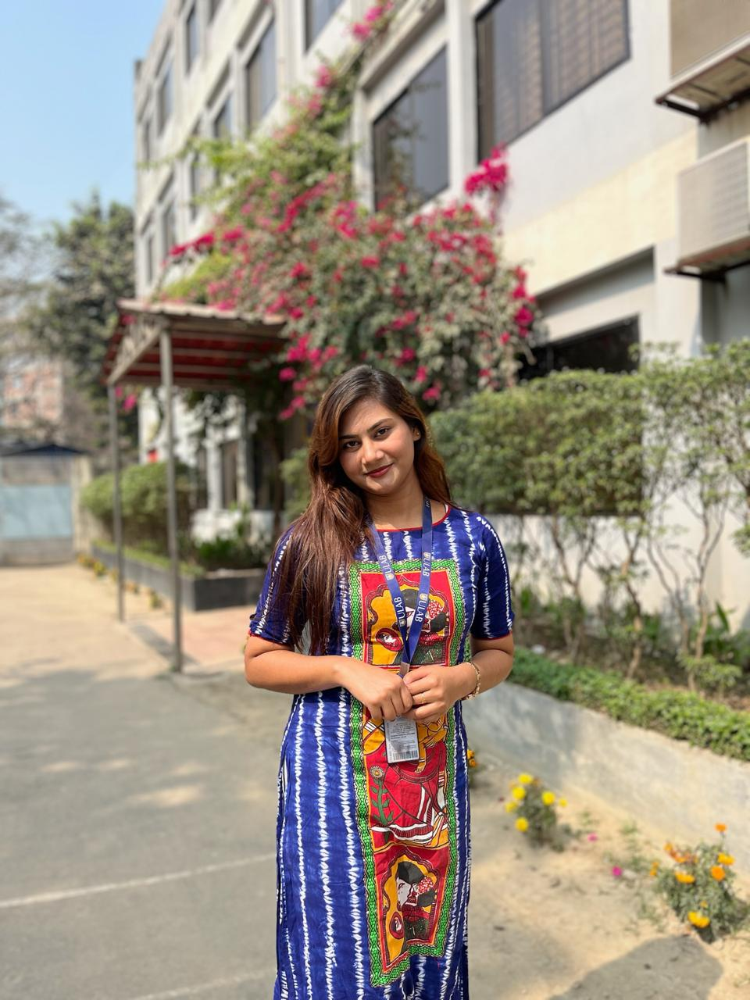

📞 +8801733585306
📧 Puja.karmokar.cse@ulab.edu.bd
📍 Dhaka real street 4 no road, Katasur, Mohammadpur
SRISTY ACADEMIC SCHOOL
Group: Science
Result: 5.00
Passing Year: 2018
KUMUDINI GOVT. COLLEGE
Group: Science
Result: 5.00
Passing Year: 2020
I am currently pursuing a Bachelor of Science (B.Sc) in Computer Science and Engineering (CSE) at the University of Liberal Arts Bangladesh (ULAB).
I aspire to contribute my knowledge, skills, and dedication to a reputed organization where I can add value while continuously growing both professionally and personally. I aim to take on challenging roles that will enhance my expertise, foster innovation, and help me adapt to dynamic industry demands. With a strong commitment to excellence and continuous learning, my goal is to build a successful career while making meaningful contributions to the organization’s growth and success.
Father’s Name: Ram Proshad Karmokar
Mother’s Name: Shipra Karmokar
Date of Birth: 10-12-2002
Blood Group: O+
Religion: Hindu
Marital Status: Unmarried
Nationality: Bangladeshi
Interest: Reading books, Cooking, Travelling, Singing, Dancing, Acting